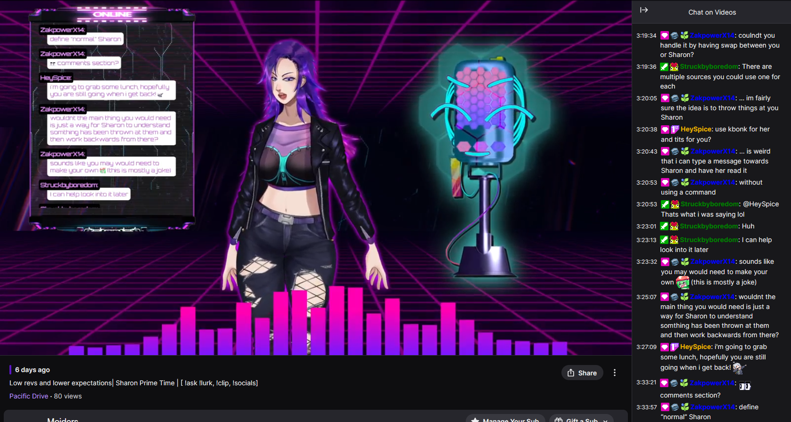

Featured
Sharon
ActiveAI VTuber System
Full AI VTuber chatbot with personality, emotional awareness, and synthesized voice. Reads Twitch chat in real time, generates GPT-powered responses, synthesizes speech via Google Cloud TTS, and reacts contextually using OpenCV screen analysis. Twitch + Discord integration over a RabbitMQ message bus.
- Emotion expression engine with context memory
- Multi-modal input: chat, speech recognition, screen vision
- Twitch EventSub + Discord bridge via RabbitMQ
- Packaged with Poetry, tested with pytest